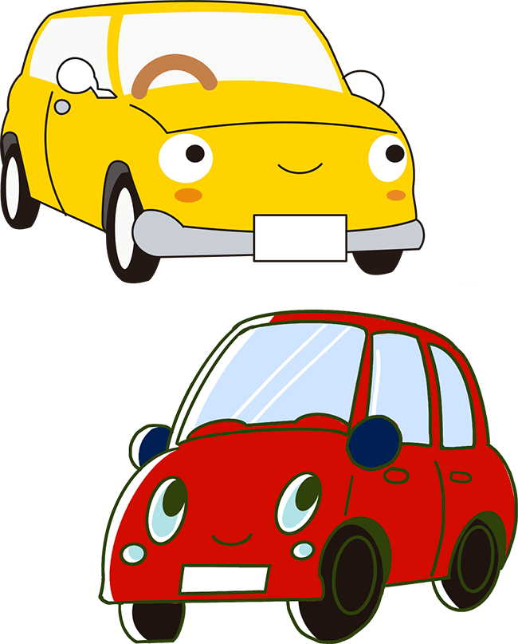
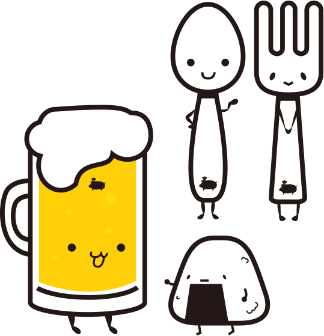
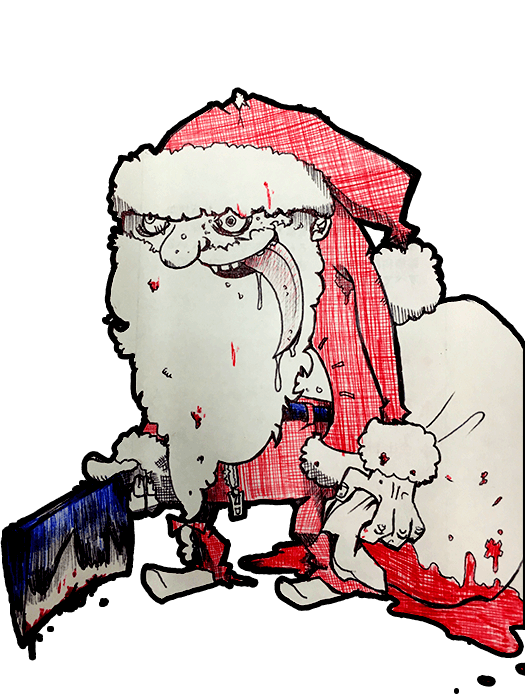
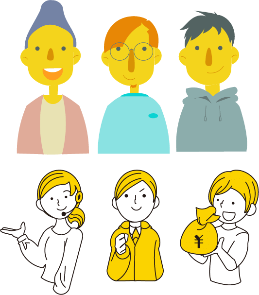
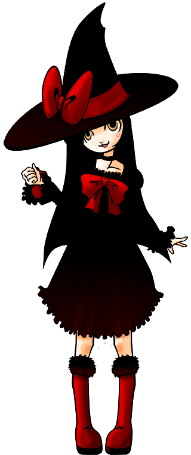
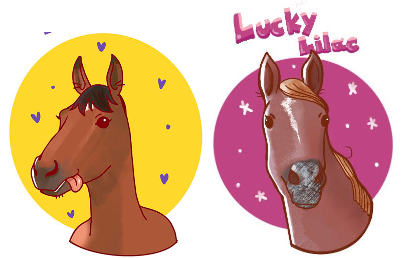

About
1981年横須賀うまれの愛知県育ちです。
セマンティックなコーディングを得意としますが、デザイン、イラスト作成も行います。
UXデザインとLive2Dを現在勉強中。
- Skill
-
Work Routine
{kind=link}
{kind=link}
Portfolio
直近の業務又はプライベートで作成したサイト
SUV販促LP
Direction/Design/Cording/Writing
ディレクションからデザイン・ライティングまで行いました。様々な女性のシーンに合わせたSUVの展開を提案するLPです。女性の活躍を軸に車種を紹介する内容になっています。 ターゲットは40代女性になっています。今までにない切り口のＬＰだったため、好評をいただきました。
Link新型車発表LP
Direction/Design/Cording
新型車発表LPです。SUVながらも高級感のある車種ですので、ターゲットを30代男性に定め、シックなカラーイメージとアクティブ感のある写真で高級感を残しつつ、親しみやすい内容に仕上げました 。
Link新生活応援セールLP
Direction/Design/Cording
4月から6月までの新生活応援セールキャンペーンのLPです。主にメインターゲットが20代の社会人だったため。季節と合わせてピンクや青などのビビッドな配色にしました。また、メインターゲットの年代の 先方の社員の方に好評をいただきました。
LinkエコカーセールLP
Direction/Design/Cording
4月から6月までのエコカーセールのキャンペーンLPです。新緑をイメージして、賑やかにしてほしいとの事だったので、 緑を基調に刺し色を黄色とイラストを合わせました。
Link{kind=link}
車両販促LP
Direction/Design/Cording/Writing
ディレクションからデザイン・ライティングまで行いました。アウトドアや様々なシーンに使われるファミリーカーなので、楽しそうな雰囲気を目指しました。
Link{kind=link}
書店企業サイト
Direction/Design/Cording
主にディレクションとデザインを担当しました。WPに関しては構築は2人体制で行い、スケジュール管理とお客様が更新されるため、 わかりやすい入力フォームの設計と指示、マニュアル作成を行いました。
Link学校法人周年サイト
Cording
メインのコーディングとアニメーションの設計・提案・作成を担当しました。
Link学校法人スポーツ事業サイト
Cording
メインのコーディングとアニメーションの設計・提案・作成を担当しました。
Link住宅展示場Webアプリ
Cording
メインのコーディングとアニメーションの設計・提案・作成を担当しました。Vue部分での構築は2名で行いました。
Link社外向けPRサイト
Cording
社外に向けたPRサイトの構築を行いました。最初は静的で進めていましたが、途中からお客様のほうで入力していくページも追加してほしいとのことだったので、 一部カテゴリにＷＰを追加しました。わかりやすい入力項目に気を付け、マニュアルの作成も行いました。
Link企業求人サイト
Cording
エンジニア派遣求人サイトになります。コーディングとアニメーションの作成を行いました。
Link映画紹介Webアプリ
Direction/Design/Cording/Illustration
(準備中)ねこが気まぐれでオススメする映画紹介Webアプリ。 映画サイトのAPIを使用してあらすじ、評価、ポスター画像を表示します。
Illustration
業務上で描いたカットからプライベートで描いたものまで
- 
- 
- 
- 
- 
- 